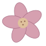
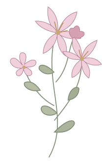
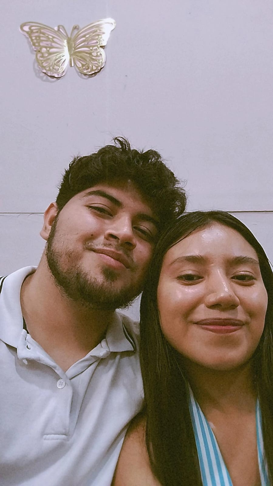
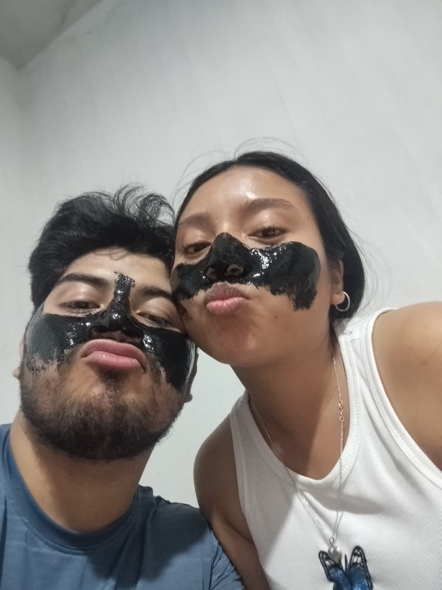

Tus ojos
Hay universos enteros ahí adentro, y me pierdo en ellos con mucho gusto.

My Kind of Woman Nuestra canciónPara ti, con todo mi amor
Un pedacito de nosotros. De lo que hemos vivido,
de lo que
siento por ti y de todo lo que nos falta.



01 / Lo bonito de encontrarte
Ella ama los lirios y yo la amo a ella.
Hay cosas que se quedan: un mensaje de cumpleaños, dos horas y media de camino, tres cartas y una pregunta. Este lugar guarda un poco de todo lo que hemos vivido.
Hay universos enteros ahí adentro, y me pierdo en ellos con mucho gusto.
Tu risa, tu voz, tu ternura. Lo bonita que eres, simplemente siendo tú.
La forma en que piensas, cómo ves el mundo y cómo me haces querer ser mejor.
02 / Nuestro álbum
Guardaría todos estos.
Los días especiales y los días que
se volvieron especiales contigo.
03 / Entre estas páginas
Estoy escribiendo nuestra historia. Para que puedas volver a ella despacito, quedarte con tus frases favoritas y dejar un separador donde quieras regresar.
Dedicatoria, prólogo y diez capítulos. Un libro que sigo escribiendo, para que conozcas un poquito más de mí.
Un rincón de lectura, solo para ti.
04 / De mí, para ti
Mi amor,
Desde que llegaste a mi vida, las cosas tienen un color diferente. No sé exactamente cómo explicarlo, pero el mundo es un lugar más bonito cuando estás tú en él.
Me encanta cómo me tratas —con esa mezcla de dulzura y honestidad que te caracteriza—. Me encanta que pueda ser yo mismo contigo, sin máscaras, sin filtros.
Me encantan tus ojos, esos que a veces me miran y me hacen olvidar lo que iba a decir. Me encanta tu inteligencia, esa que me desafía y me hace querer ser mejor cada día.
Me encanta tu manera de ser. Toda entera, sin excepción.
Te quiero mucho, más de lo que sé expresar.
Siempre, tuyo.
P. D. Esta historia todavía tiene muchas páginas por escribir.
05 / Así suena pensar en ti
Me recuerda a ti cada vez que la escucho.
Y eso no va a cambiar.
Mac DeMarco
Lo mejor de esta historia es que